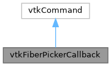

|
MUSICardio 4.2
MUSICardio application created by Inria Epione, IHU LIRYC and Université de Bordeaux
|
Loading...
Searching...
No Matches
|
MUSICardio 4.2
MUSICardio application created by Inria Epione, IHU LIRYC and Université de Bordeaux
|
#include <vtkFiberPickerCallback.h>


Public Member Functions | |
| virtual void | Execute (vtkObject *, unsigned long, void *) |
| void | SetInputConnection (vtkAlgorithmOutput *input) |
| void | SetFiberImage (vtkPolyData *image) |
| vtkPolyData * | GetFiberImage () const |
| void | SetFibersManager (vtkFibersManager *manager) |
| vtkActor * | GetPickedActor () const |
| void | DeletePickedCell () |
Static Public Member Functions | |
| static vtkFiberPickerCallback * | New () |
vtkFiberPickerCallback declaration & implementation